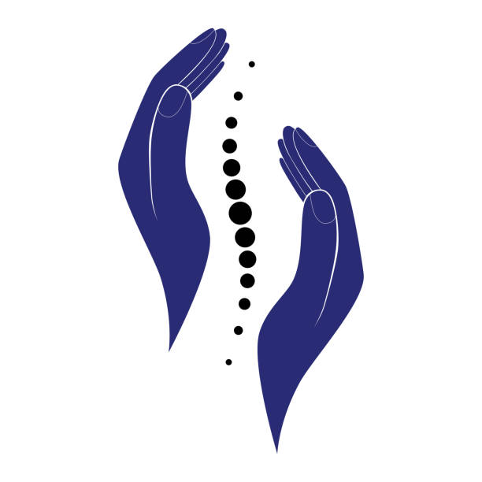
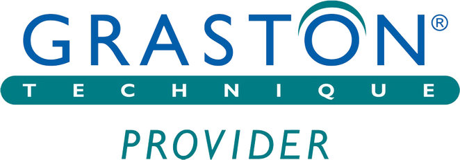

What we do
Traction Therapy
Designed by Chiropractors and proven by case studies and clinical trial, Denneroll devices allow you to continue your treatment at home, hastening your recovery time while improving flexibility and function. Dr. Lee incorporates the use of Denneroll into most treatment plans. Denneroll products are also available for purchase at Seattle Northeast Chiropractic. Dr. Lee can train you for at home set up on your own!
Class IV laser therapy
Laser Therapy is the use of specific wavelengths of light (red and near-infrared) to stimulate the body’s natural ability to heal. The effects of laser energy include improved healing time, pain reduction, increased circulation and decreased swelling. During each painless treatment, laser energy increases circulation, drawing water, oxygen, and nutrients to the damaged area. Specialists across various medical disciplines have found this new treatment method to be highly effective in creating an optimal healing environment that reduces inflammation, swelling, muscle spasms, stiffness, and pain. As the injured area returns to normal, function is restored and pain is relieved.
Class IV Laser Therapy is an FDA cleared therapeutic treatment that manages pain and inflammation while accelerating tissue regeneration. During laser therapy treatment, infrared laser light interacts with tissues at the cellular level increasing metabolic activity within the cell. By improving the transport of nutrients across the cell membrane, the increased production of cellular energy (ATP) is stimulated. The cascade of beneficial effects that follows includes increased cellular function and tissue repair.
Decompression Therapy
Decompression Therapy is a non-surgical procedure that effectively treats disabling neck pain, low back pain, headaches, radiating leg and arm pain. Decompression Therapy effectively relieves the pain associated with disc herniation, degenerated discs, posterior facet, and other spinal related syndromes. Decompression therapy works by reducing the pressure on spinal discs and facet joints through unloading, created by distraction and positioning. It enhances the healing process and often renders quick, effective and amazing pain relief that enables most patients to return to a more active lifestyle. Decompression Therapy is highly successful in treating patients suffering with bulging, herniated, degenerative, or ruptured discs as well as sciatica, carpal tunnel syndrome, and many failed back surgery cases.
Decompression Therapy begins with a series of sessions, typically 1-2 times per week as needed. Ask Dr. Lee if Decompression Therapy can be incorporated into your treatment plan using the Kennedy Decompression Table.
Spinal Adjustment
Spinal Manipulation is a chiropractic adjustment that can be performed many ways by the Chiropractor. An adjustment can be done by hand, or with a non-invasive instrument such as ArthroStim, Activator Method or Erchonia Adjuster. The goal of an adjustment is to restore mobility by unlocking locked up joints and enhancing joint function while reducing pain and joint inflammation.
Spinal Manipulation is the most frequent technique used by a Chiropractor. It often results in a popping sound, this is from small pockets containing nitrogen and carbon dioxide releasing their pressure in your joint tissues. Chiropractors can also perform adjustments on extremities, such as shoulders, elbows, hands, hips, legs and feet.
Graston Technique
The Graston Technique® is a form of manual therapy known as soft-tissue instrument-assisted mobilization. It is one of a number of manual therapy approaches that uses instruments with a specialized form of massage/scraping the skin gently. The therapy is designed to help the Chiropractor identify areas of restriction and attempt to break up scar tissue. The general goals of the therapy are to reduce the patient’s pain and increase function through a combination of:
- Breaking down the scar tissue and fascia restrictions that are usually associated with some form of trauma to the soft tissue (e.g., a strained muscle or a pulled ligament, tendon, or fascia).
- Reducing restrictions by stretching connective tissue in an attempt to rearrange the structure of the soft tissue being treated (e.g., muscle, fascia, tendons, ligaments).
- Promoting a better healing environment for the injured soft tissue.
Most of the back is comprised of muscles, fascia, ligaments, and tendons. Injuries to these soft tissues play a significant role in the pain and dysfunction associated with back problems. While it may not sound like a serious injury, a simple back muscle strain or torn ligament in the back can cause excruciating pain and difficulty with movement. The Graston Technique® offers several potential advantages to the patient with such an injury:
- Decreasing overall treatment time
- Fostering faster rehabilitation/recovery
- Reducing the need for anti-inflammatory medication
- Resolving chronic conditions thought to be permanent The treatment may be used alone or in conjunction with other treatments.
Dr. Lee is a certified Graston Technique® Specialist.
Trigenics
Trigenics® is a neuro-kinetic, sensorimotor assessment, treatment and training system, which instantly relieves pain and increases strength and movement. Trigenics® is a “multimodal” treatment system. This means that Trigenics® is unique in that it combines a number of different treatment “techniques” which are applied at the same time to gain a much greater effect than that of which would be achieved by only applying one.
Trigenics® itself, is not a treatment technique. It is a total full body assessment and treatment “system”. The complex procedures used in Trigenics® retrain the way the brain communicates its movement and/or pain signals with the muscles of the body . The treatments are either manual or involve the use of instruments or exercise equipment. The beneficial effects are instantaneous and if Trigenics® is what they need, patients having suffered from physical pain syndromes and/or movement dysfunctions always see strikingly measurable results on their first visit to a Trigenics® practitioner. This will be the case; no matter how long they have had the condition and attended other therapies or how many doctors or therapists they have seen.
Dr. Lee received his Registered Trigenics® Practitioner certification from The Trigenics® Institute of Functional Neurology.